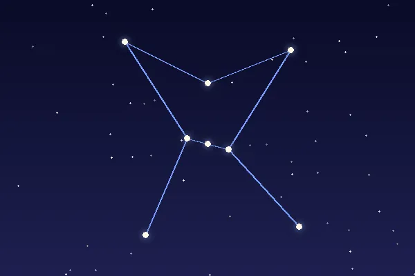
Orión
El cazador
Se reconoce por las tres estrellas en línea de su cinturón. Su estrella roja, Betelgeuse, es tan grande que, si estuviera en el lugar del Sol, llegaría más allá de Marte.
Planetario Estrella Polar
Estas son algunas de las constelaciones que puedes ver en nuestras sesiones. Pasa el ratón por encima de cada tarjeta.

El cazador
Se reconoce por las tres estrellas en línea de su cinturón. Su estrella roja, Betelgeuse, es tan grande que, si estuviera en el lugar del Sol, llegaría más allá de Marte.
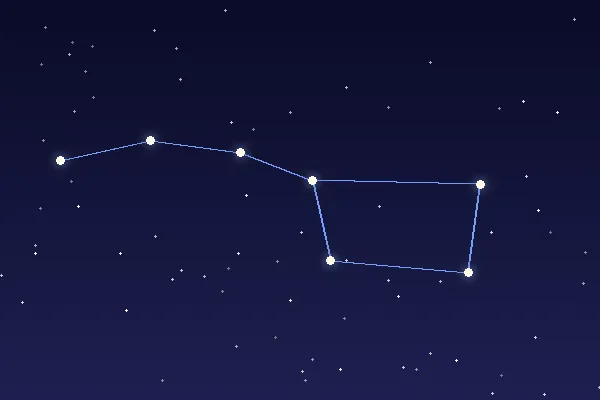
La gran osa
Siete de sus estrellas forman el «Carro». Si prolongas la línea de las dos últimas estrellas del carro, llegas a la Estrella Polar.
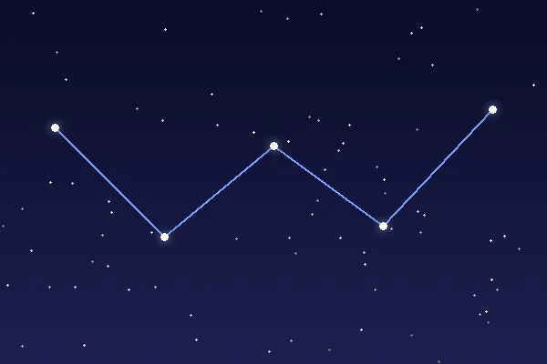
La reina
Tiene forma de W o de M según la estación. Desde España se ve todas las noches del año porque nunca se esconde bajo el horizonte.
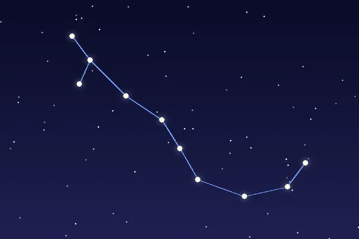
El escorpión
Su corazón es Antares, una estrella rojiza. Su nombre significa «rival de Marte» porque los dos tienen un color parecido.
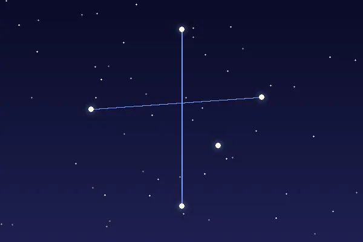
La más pequeña
Es la constelación más pequeña de las 88. Aparece en las banderas de Australia, Brasil y Nueva Zelanda, pero desde España casi no se ve.
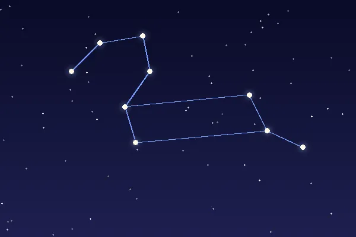
El león
Su estrella más brillante es Régulo. Cada noviembre, la lluvia de estrellas de las Leónidas parece salir de esta constelación.
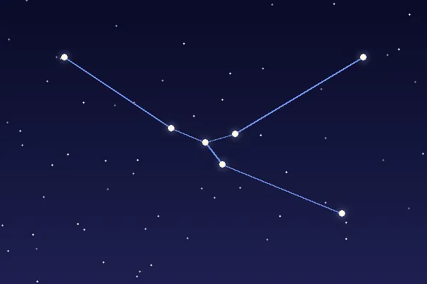
El toro
Su ojo rojo es la estrella Aldebarán. En su lomo está el cúmulo de las Pléyades, que en España se conoce como «las siete cabrillas».
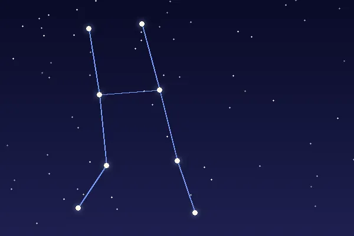
Los gemelos
Sus dos estrellas más brillantes, Cástor y Pólux, son las cabezas de los gemelos. En diciembre, la lluvia de estrellas Gemínidas parece salir de aquí.
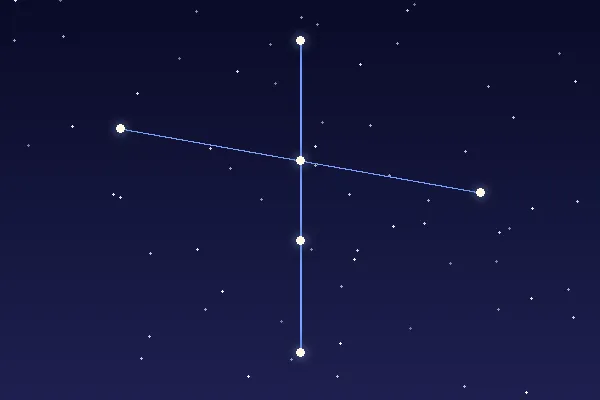
La cruz del norte
Tiene forma de cruz y parece volar por la Vía Láctea. Su estrella Deneb forma parte del famoso Triángulo de Verano.
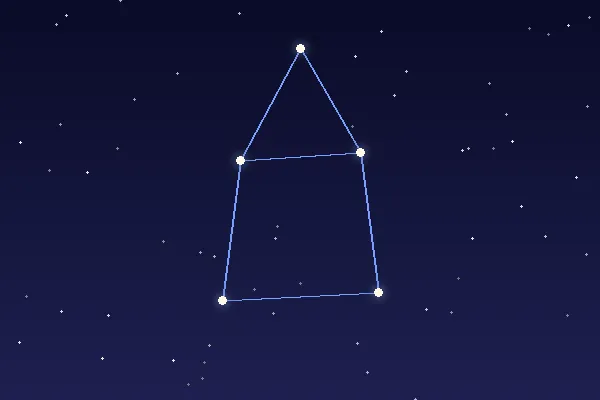
El instrumento
Es pequeña, pero tiene a Vega, una de las estrellas más brillantes. Dentro de unos 12 000 años, Vega será nuestra estrella polar.
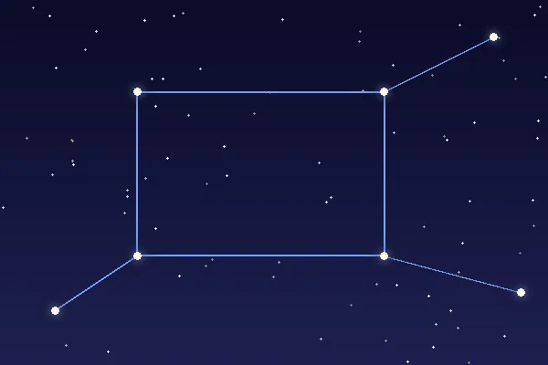
El caballo alado
Cuatro de sus estrellas forman el «Gran Cuadrado de Pegaso», aunque una de esas cuatro pertenece en realidad a Andrómeda.
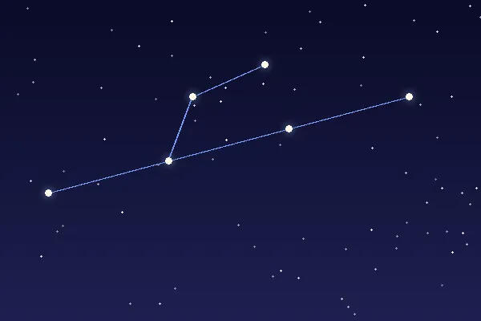
La princesa
En ella está la galaxia de Andrómeda, a 2,5 millones de años luz. Es lo más lejano que se puede ver a simple vista.
Más información en la Wikipedia.